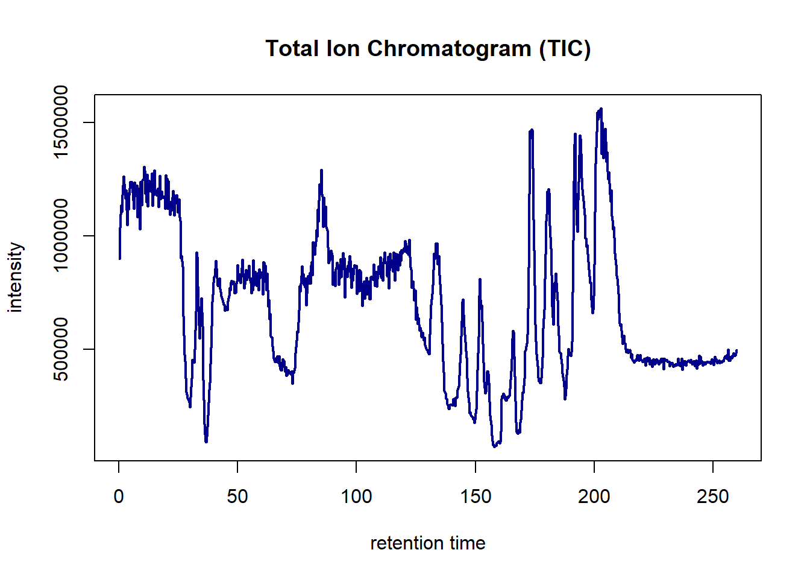

3 Vooruikijken: Massaspectrometrie
Deze opdracht is onderdeel van de cursus Workflows en richt zich op het leren van een nieuwe Data Science for Biology skill: het analyseren van massaspectrometriedata in R. De keuze voor deze skill is gebaseerd op het toekomstbeeld waarin moleculair onderzoek gecombineerd wordt met bioinformatica.
3.1 1. Toekomstbeeld en motivatie
Toekomstvisie
Over een tot twee jaar mijn doel is om werkzaam te zijn in een onderzoeksomgeving zoals een academisch ziekenhuis, een universiteit of een biotechnologisch bedrijf. Het liefst in een rol waarin laboratoriumonderzoek wordt gecombineerd met bioinformatica, bijvoorbeeld op het gebied van eiwitonderzoek of medicijnontwikkeling.
Huidige vaardigheden
- Praktische ervaring met laboratoriumtechnieken zoals eiwitanalyse, sequencing, PCR
- Data-analyse met R, GitHub en SQL
- Basiskennis van bioinformatica en datavisualisatie
Nieuwe skill om te leren
Om dichter bij het toekomstdoel te komen, wordt gekozen voor het leren analyseren van massaspectrometriedata. Deze analysetechniek is belangrijk in proteomics en wordt gebruikt voor eiwitidentificatie en -kwantificatie. Door dit te koppelen aan R wordt geleerd hoe ruwe data wordt omgezet naar bruikbare biologische informatie.
Gekozen skill:
Analyseren van massaspectrometriedata in R
3.2 2. Planning
| Datum | Activiteit | Tijd (uren) | Toelichting |
|---|---|---|---|
| 05 mei | Introductie: wat is massaspectrometrie? | 2 | Begrijpen van het basisprincipe, zoeken van uitlegvideo’s |
| 06 mei | Wat kun je analyseren met massaspectrometrie? | 2 | Uitleg over toepassingen in eiwitonderzoek |
| 07 mei | Installeren van R-packages (MSnbase, Spectra) |
2 | R en Bioconductor gereedmaken |
| 08 mei | Tutorial volgen: voorbeeldanalyse bekijken | 3 | Gebruik maken van online tutorials |
| 09 mei | Begrippen oefenen: spectra, intensiteit, massa/charge | 1 | Leren herkennen in voorbeelddata |
| 10 mei | Voorbeelddataset downloaden (.mzML bestand) | 2 | Van PRIDE database of Bioconductor |
| 11 mei | Data inlezen in R | 2 | Gebruik maken van MSnbase::readMSData() |
| 12 mei | Eerste grafiek maken (bijv. chromatogram of spectrum) | 3 | Visualisatie oefenen met 1 sample |
| 13 mei | Meer samples toevoegen, data filteren of normaliseren | 3 | Werken aan kwaliteit van de data |
| 14 mei | Eenvoudige analyse uitvoeren | 3 | Bijvoorbeeld gemiddelde intensiteit per sample vergelijken |
| 15 mei | Resultaten visualiseren (boxplot, PCA of heatmap) | 3 | Overzicht maken van verschillen |
| 16 mei | Alles verwerken in RMarkdown | 2 | Duidelijk verslag maken van je leerproces |
| 17 mei | Uploaden naar GitHub | 2 | Resultaat delen als bewijs |
Totaal: 32 uur
3.3 3. Inleiding
Massaspectrometrie is een krachtige techniek om moleculen zoals eiwitten te identificeren en kwantificeren op basis van hun massa en lading. In de proteomics wordt deze techniek veel gebruikt om eiwitprofielen van verschillende biologische condities te vergelijken, zoals zieke versus gezonde cellen.
In deze opdracht leer ik hoe ik massaspectrometriedata kan analyseren met R en Bioconductor. Het doel is om inzicht te krijgen in de structuur van deze data, deze correct te visualiseren, te normaliseren en een eenvoudige statistische analyse uit te voeren.
Doel:
Het verwerven van basisvaardigheden in het analyseren van massaspectrometriedata met R, met behulp van publieke data en Bioconductor-tools.
3.4 4. Hoe ziet het systeem eruit?
Wat is een massaspectrometer?
Een massaspectrometer is een analytisch instrument dat moleculen meet op basis van hun massa en lading. Het bestaat uit drie hoofdonderdelen:
1. Inlaatsysteem (Ionisatiebron)
In dit onderdeel wordt het monster omgezet in geladen deeltjes (ionen). Afhankelijk van het type monster en toepassing worden verschillende ionisatiemethoden gebruikt:
- Electrospray Ionization (ESI): zacht en geschikt voor eiwitten en peptiden in oplossing.
- Matrix-Assisted Laser Desorption/Ionization (MALDI): gebruikt voor grotere moleculen en vaste monsters.
- Electron Impact (EI): vooral gebruikt voor kleinere, vluchtige moleculen, bijvoorbeeld in GC-MS.
Doel: moleculen omzetten in ionen zodat ze kunnen worden gemeten.
2. Analyser (Massascheider)
De gevormde ionen worden gescheiden op basis van hun massa/lading-verhouding (m/z). Enkele veelgebruikte analyzers:
- Time-of-Flight (TOF): meet hoe snel ionen een afstand afleggen – lichtere ionen bewegen sneller.
- Quadrupole: gebruikt elektrische velden om specifieke m/z-waarden door te laten.
- Orbitrap / Ion Trap / FT-ICR: geavanceerde systemen met zeer hoge resolutie en nauwkeurigheid.
Doel: scheiden van ionen op basis van m/z.
3. Detector
De gescheiden ionen worden opgevangen door een detector, die hun aantal en m/z meet. Zo ontstaat een massaspectrum: een grafiek met m/z op de x-as en intensiteit op de y-as.
Doel: meten van hoeveelheid ionen per m/z-waarde.
Wat kun je analyseren met massaspectrometrie?
MS wordt breed ingezet in de biowetenschappen:
- Identificatie van eiwitten in biologische samples
- Kwantificatie van eiwitniveaus (labelvrij of met labels)
- Detectie van post-translationele modificaties (zoals fosforylatie)
- Analyse van biomarkers bij ziekte
3.5 Termen in de massaspectrometrie
Belangrijke termen in de massaspectrometrie:
- Spectrum: een grafiek met pieken die ionen representeren. De intensiteit tegenover massa/lading (m/z)
- Mass-to-charge ratio (m/z): verhouding tussen massa en lading
- Intensiteit: hoogte van de piek – geeft hoeveelheid molecuul aan. In andere woorden hoe sterk het signaal is van een ion. De eenheid hiervan is meestal arbitrair en wordt vaak gewoon “intensiteit” genoemd. Het is een relatieve waarde die aangeeft hoe sterk het signaal is van de ionen, maar het is géén absolute concentratie in mol/liter of zo.
- Retention time: moment waarop het molecuul het systeem verlaat. In andere woorden tijd waarop een molecuul wordt gedetecteerd. Meestal uitgedrukt in seconden (s) of minuten (min).
Voorbeeld van een chromatogram in R
library(MSnbase)
f <- dir(system.file("sciex", package = "msdata"), full.names = TRUE)[1]
ms_data <- readMSData(f, mode = "onDisk")
chrom <- chromatogram(ms_data)
plot(chrom[1, 1], col = "darkblue", lwd = 2)Figuur 4: Een voorbeeld van een chromatorgram in R. Op de y-as is de Intensiteit arbitraire eenheden (relatieve ionenintensiteit) en op de x-as is de retention time in seconden (s) te zien
3.6 Tools en packages
Voor het analyseren van massaspectrometriedata in R zijn de volgende Bioconductor-packages nodig:
# Installatie van benodigde packages
if (!requireNamespace("BiocManager", quietly = TRUE))
install.packages("BiocManager")
BiocManager::install(c("MSnbase", "Spectra", "pheatmap", "ggplot2", "FactoMineR", "factoextra", "Rtsne"))We gebruiken de volgende R-packages:
# Laad de libraries die je nodig hebt voor de analyse.
library(MSnbase) # Massaspectrometrie analyse
library(Spectra) # Spectrum verwerking
library(msdata) # Voorbeelddata voor massaspectrometrie
library(ggplot2) # Grafieken maken
library(pheatmap) # Heatmaps
library(FactoMineR) # PCA-analyse
library(factoextra) # Visualisatie PCA
library(Rtsne) # t-SNE analyse
library(tidyr)
library(dplyr)3.7 4. Uitwerking met msdata
3.7.1 Introductie bestandsformaat en voorbeelddata
Voor deze opdracht gebruik ik een voorbeeldbestand uit het msdata-pakket van Bioconductor. Dit bestand heeft het .mzML-formaat, een open standaard voor massaspectrometrie (MS) data.
Het .mzML-formaat is gebaseerd op XML en is gemaakt om ruwe MS-data goed en overzichtelijk op te slaan. Het werkt op verschillende computers en programma’s. In één bestand kunnen meerdere spectra zitten, bijvoorbeeld van verschillende MS-niveaus (zoals MS1 en MS2). Hierdoor kan ik ook ingewikkelde MS-experimenten analyseren, zoals experimenten met fragmentatie (MS/MS).
3.7.2 Hoe ik de data inlees
Ik lees het voorbeeldbestand in met het readMSData-commando uit het MSnbase-pakket. Hierbij gebruik ik de optie onDisk, zodat ik niet alles tegelijk in het geheugen hoef te laden. Dit is handig, want MS-bestanden zijn vaak heel groot.
Daarna bekijk ik een korte samenvatting van de data, zoals het aantal spectra, welke MS-niveaus aanwezig zijn, en de retentietijden (hoe lang het monster in de machine zat).
# Het inlezen van een voorbeeld .mzML bestand uit het msdata-pakket.
# Dit bestand bevat massaspectrometrie data in een open formaat.
f <- dir(system.file("sciex", package = "msdata"), full.names = TRUE)[1]
# Lees het bestand in als OnDiskMSnExp object, dat efficiënt met grote data kan omgaan.
ms_data <- readMSData(f, mode = "onDisk")
# Toon een samenvatting van de data (aantal spectra, MS-levels, etc.)
ms_data## MSn experiment data ("OnDiskMSnExp")
## Object size in memory: 0.36 Mb
## - - - Spectra data - - -
## MS level(s): 1
## Number of spectra: 931
## MSn retention times: 0:00 - 4:20 minutes
## - - - Processing information - - -
## Data loaded [Sun May 25 22:15:49 2025]
## MSnbase version: 2.32.0
## - - - Meta data - - -
## phenoData
## rowNames: 20171016_POOL_POS_1_105-134.mzML
## varLabels: sampleNames
## varMetadata: labelDescription
## Loaded from:
## 20171016_POOL_POS_1_105-134.mzML
## protocolData: none
## featureData
## featureNames: F1.S001 F1.S002 ... F1.S931 (931 total)
## fvarLabels: fileIdx spIdx ... spectrum (35 total)
## fvarMetadata: labelDescription
## experimentData: use 'experimentData(object)'3.7.3 Verkennen van spectra
Een veelgebruikte grafiek in massaspectrometrie is het chromatogram, bijvoorbeeld het Total Ion Chromatogram (TIC). Dit laat zien hoeveel ionen er per tijdspunt zijn gedetecteerd. Zo kan ik makkelijk zien waar pieken en mogelijke verstoringen zitten.
# Check hoeveel spectra er in het bestand zitten.
cat("Aantal spectra totaal:", length(ms_data), "\n")## Aantal spectra totaal: 931##
## 1
## 931# Bekijk het bereik van retentietijden (hoe lang duurde de meting)
rt_range <- range(rtime(ms_data))
cat("Retentietijd range:", rt_range[1], "-", rt_range[2], "seconden\n")## Retentietijd range: 0.28 - 259.757 seconden# Optioneel: histogram van retentietijden voor visuele inspectie
hist(rtime(ms_data), breaks = 50, main = "Histogram van retentietijden", xlab = "Retentietijd (s)")Figuur 5: Een histogram van de retentietijden. Op de y-as is de frequency en op de x-as is de retentietijd in seconden (s) te zien
3.7.4 Plotten van chromatogram
Met chromatogram() maak ik een Total Ion Chromatogram (TIC):
# Maak een chromatogram aan, wat de totale ionenintensiteit over retentietijd weergeeft.
chrom <- chromatogram(ms_data)
# Plot het eerste chromatogram (Total Ion Chromatogram)
plot(chrom[1,1], col = "darkblue", lwd = 2, main = "Total Ion Chromatogram (TIC)")
Figuur 6: Een chromatorgram. Op de y-as is de Intensiteit arbitraire eenheden (relatieve ionenintensiteit) en op de x-as is de retention time in seconden (s) te zien
Het chromatogram geeft een overzicht van de totale intensiteit van ionen gedurende de looptijd van de meting. Dit kan pieken en afwijkingen laten zien.
3.7.5 Filteren op retentietijd en MS-level
Vaak wil ik alleen de relevante data gebruiken. Daarom filter ik spectra op een bepaald retentietijd-interval en kies ik bijvoorbeeld alleen de MS1 spectra (de ‘precursor’ scans). Dit maakt de dataset kleiner en overzichtelijker, wat handig is voor verdere analyse.
# Filter de spectra op een relevant retentietijd-interval, bijvoorbeeld het middenstuk van de run.
rt_filter <- c(rt_range[1] + 10, rt_range[2] - 10)
ms_data_filtered <- filterRt(ms_data, rt = rt_filter)
# Beperk tot MS1 spectra (eerste niveau massaspectrometrie)
ms_data_filtered <- filterMsLevel(ms_data_filtered, msLevel = 1)
cat("Aantal spectra na filteren:", length(ms_data_filtered), "\n")## Aantal spectra na filteren: 859if(length(ms_data_filtered) == 0) stop("Geen spectra gevonden na filteren! Pas je RT interval aan.")3.7.6 Gemiddeld spectrum handmatig berekenen en plotten
Door meerdere spectra samen te voegen kan ik een gemiddeld spectrum maken. Dit helpt om ruis te verminderen en algemene pieken beter te herkennen.
Ik pak alle spectra, zet de m/z-waarden om naar een gemeenschappelijk raster, interpolateer de intensiteiten en bereken het gemiddelde per m/z-waarde. Daarna plot ik het gemiddelde spectrum.
# Haal individuele spectra op uit het gefilterde object
spectra_list <- spectra(ms_data_filtered)
# Pak m/z waarden en intensiteiten per spectrum
mz_list <- lapply(spectra_list, mz)
int_list <- lapply(spectra_list, intensity)
# Combineer alle m/z waarden voor een gemeenschappelijk raster
mz_vals_all <- unlist(mz_list)
mz_vals_all <- mz_vals_all[is.finite(mz_vals_all)]
if(length(mz_vals_all) == 0) stop("Geen valide m/z waarden gevonden!")
# Definieer gemeenschappelijk m/z raster met stapgrootte 0.1
common_mz <- seq(from = min(mz_vals_all), to = max(mz_vals_all), by = 0.1)
# Functie om intensiteiten te interpoleren naar het gemeenschappelijke raster
interp_intensity <- function(mz_vals, intensities, common_mz) {
approx(mz_vals, intensities, xout = common_mz, yleft = 0, yright = 0)$y
}
# Interpoleer alle spectra naar hetzelfde m/z raster
interp_intensities <- sapply(seq_along(mz_list), function(i) {
interp_intensity(mz_list[[i]], int_list[[i]], common_mz)
})
# Bereken het gemiddelde spectrum
mean_intensity <- rowMeans(interp_intensities)
# Plot het gemiddelde spectrum
plot(common_mz, mean_intensity, type = "l",
xlab = "m/z", ylab = "Gemiddelde intensiteit",
main = "Gemiddeld spectrum (handmatig berekend)")Figuur 7: Een gemiddeld spectrum (handmatig berekend). Op de y-as is de gemiddelde Intensiteit arbitraire eenheden (relatieve ionenintensiteit) en op de x-as is de Mass-to-charge ratio (m/z) te zien
3.7.7 PCA op voorbeelddata
Met Principal Component Analysis (PCA) kan ik patronen en verschillen tussen spectra ontdekken. PCA maakt ingewikkelde data eenvoudiger door ze samen te vatten in een paar belangrijke componenten.
Ik gebruik een deel van de spectra om PCA uit te voeren en plot het resultaat. Zo kan ik zien welke spectra op elkaar lijken en welke verschillen, wat kan wijzen op verschillende monsters of condities.
PCA helpt mij om de complexiteit van de data te verminderen en te zien of spectra in groepen clusteren of juist veel variatie laten zien.
# Gebruik een subset van spectra (maximaal 50) voor PCA vanwege rekentijd
n_pca <- min(50, length(ms_data_filtered))
intensity_mat <- interp_intensities[, 1:n_pca]
# Transponeer zodat spectra rijen zijn en m/z kolommen
intensity_mat_t <- t(intensity_mat)
# Voer PCA uit om patronen en clustering te vinden
pca_res <- PCA(intensity_mat_t, graph = FALSE)
# Visualiseer PCA-resultaten
fviz_pca_ind(pca_res, title = "PCA van massaspectrometriedata")
Figuur 8: PCA-plot waarin spectra worden weergegeven op basis van de belangrijkste variaties in de data. De assen tonen de eerste twee principal components, die samenvattingen zijn van de verschillen tussen spectra.
Deze PCA-plot toont de eerste twee hoofdcomponenten van de massaspectrometriedata, die samen 8% van de totale variatie verklaren. Elk punt vertegenwoordigt een spectrum; spectra die dicht bij elkaar liggen, vertonen gelijkaardige signaalpatronen, terwijl uitbijters (zoals punt 6 en 30) mogelijk afwijkende profielen hebben. De lage verklaarde variantie wijst op complexe data met veel dimensies. Deze visualisatie geeft een eerste indruk van gelijkenissen en verschillen tussen spectra.
3.7.8 t-SNE visualisatie van spectra
Waar PCA lineaire verbanden tussen spectra onderzoekt, is t-distributed Stochastic Neighbor Embedding (t-SNE) een niet-lineaire methode die speciaal geschikt is om lokale structuur en clusters in hoge-dimensionale data zichtbaar te maken. t-SNE reduceert de data tot twee dimensies, zodat ik de verschillen tussen spectra kan visualiseren in een scatterplot.
Dit helpt mij om bijvoorbeeld subtiele verschillen tussen spectra op te sporen die in PCA minder duidelijk zichtbaar zijn.
# t-SNE vereist volledige data zonder ontbrekende waarden
if (any(!is.finite(intensity_mat_t))) {
warning("Niet alle waarden zijn eindig. Vervang NA/Inf met 0 voor t-SNE.")
intensity_mat_t[!is.finite(intensity_mat_t)] <- 0
}
# t-SNE analyse uitvoeren (dit kan enige tijd duren)
set.seed(123) # Voor reproduceerbaarheid
tsne_res <- Rtsne(intensity_mat_t, dims = 2, perplexity = 10, verbose = TRUE)## Performing PCA
## Read the 50 x 50 data matrix successfully!
## OpenMP is working. 1 threads.
## Using no_dims = 2, perplexity = 10.000000, and theta = 0.500000
## Computing input similarities...
## Building tree...
## Done in 0.00 seconds (sparsity = 0.737600)!
## Learning embedding...
## Iteration 50: error is 54.405711 (50 iterations in 0.00 seconds)
## Iteration 100: error is 57.432260 (50 iterations in 0.00 seconds)
## Iteration 150: error is 55.561156 (50 iterations in 0.00 seconds)
## Iteration 200: error is 60.018003 (50 iterations in 0.00 seconds)
## Iteration 250: error is 58.704198 (50 iterations in 0.00 seconds)
## Iteration 300: error is 1.880032 (50 iterations in 0.00 seconds)
## Iteration 350: error is 1.471422 (50 iterations in 0.00 seconds)
## Iteration 400: error is 0.885947 (50 iterations in 0.00 seconds)
## Iteration 450: error is 0.818365 (50 iterations in 0.00 seconds)
## Iteration 500: error is 0.646077 (50 iterations in 0.00 seconds)
## Iteration 550: error is 0.450060 (50 iterations in 0.00 seconds)
## Iteration 600: error is 0.428152 (50 iterations in 0.00 seconds)
## Iteration 650: error is 0.426304 (50 iterations in 0.00 seconds)
## Iteration 700: error is 0.425267 (50 iterations in 0.00 seconds)
## Iteration 750: error is 0.423981 (50 iterations in 0.00 seconds)
## Iteration 800: error is 0.422391 (50 iterations in 0.00 seconds)
## Iteration 850: error is 0.420444 (50 iterations in 0.00 seconds)
## Iteration 900: error is 0.424439 (50 iterations in 0.00 seconds)
## Iteration 950: error is 0.424924 (50 iterations in 0.00 seconds)
## Iteration 1000: error is 0.408937 (50 iterations in 0.00 seconds)
## Fitting performed in 0.03 seconds.# Resultaten in een dataframe voor ggplot
tsne_df <- data.frame(
Dim1 = tsne_res$Y[,1],
Dim2 = tsne_res$Y[,2],
Spectrum = factor(1:nrow(tsne_res$Y))
)
# Plot met ggplot2
ggplot(tsne_df, aes(x = Dim1, y = Dim2)) +
geom_point(color = "darkred", size = 2) +
theme_minimal() +
labs(title = "t-SNE visualisatie van spectra",
x = "t-SNE Dimensie 1",
y = "t-SNE Dimensie 2")Figuur 9: t-SNE-plot van de spectrale data. Elk punt stelt een spectrum voor. Nabijheid in de plot suggereert gelijkaardige piekpatronen. De methode is gevoelig voor lokale structuren in de data.
Deze t-SNE plot laat zien hoe massaspectra zich groeperen. Ik zie duidelijke clusters: spectra die chemisch op elkaar lijken, liggen dicht bij elkaar. De lege ruimtes tussen clusters tonen duidelijke verschillen tussen groepen. Compacte clusters betekenen sterke overeenkomsten, verspreide punten zijn mogelijk uitschieters. Deze visualisatie helpt me snel patronen en relaties te herkennen.
3.8 5. Uitwerking met de pRolocdata
In deze analyse gebruik ik massaspectrometriegegevens uit de dunkley2006 dataset, die beschikbaar is via het pRolocdata-pakket. Deze dataset bevat kwantitatieve gegevens over eiwitten in plantencellen en hun lokalisatie in verschillende subcellulaire compartimenten. Met behulp van PCA, t-SNE en machine learning (SVM) onderzoek ik hoe goed eiwitten op basis van deze data geclassificeerd kunnen worden naar hun locatie in de cel.
3.8.1 Stap 1: Installatie en laden van benodigde pakketten
Voor deze analyse heb ik de volgende R/Bioconductor-pakketten nodig:
pRolocenpRolocdata: voor data en analyse van eiwitlokalisatie.Rtsne: om t-SNE plots te maken.pheatmap: om expressiedata te visualiseren in een heatmap.
# Installeer Bioconductor-pakketten als ze nog niet aanwezig zijn
if (!requireNamespace("BiocManager", quietly = TRUE))
install.packages("BiocManager")
# Installeer benodigde pakketten
BiocManager::install(c("pRoloc", "pRolocdata", "Rtsne", "pheatmap"))
# Nu laad ik de pakketten:
library(pRoloc)
library(pRolocdata)
library(Rtsne)
library(pheatmap)3.8.2 Stap 2: Laad de dunkley2006 dataset
Ik laad de dunkley2006 dataset. Deze bevat een MSnSet object met eiwitexpressies over meerdere fracties.
## MSnSet (storageMode: lockedEnvironment)
## assayData: 689 features, 16 samples
## element names: exprs
## protocolData: none
## phenoData
## sampleNames: M1F1A M1F4A ... M2F11B (16 total)
## varLabels: membrane.prep fraction replicate
## varMetadata: labelDescription
## featureData
## featureNames: AT1G09210 AT1G21750 ... AT4G39080 (689 total)
## fvarLabels: assigned evidence ... markers (8 total)
## fvarMetadata: labelDescription
## experimentData: use 'experimentData(object)'
## pubMedIds: 16618929
## Annotation:
## - - - Processing information - - -
## Loaded on Thu Jul 16 22:53:08 2015.
## Normalised to sum of intensities.
## Added markers from 'mrk' marker vector. Thu Jul 16 22:53:08 2015
## MSnbase version: 1.17.123.8.3 Stap 3: Eerste verkenning van de dataset
Ik begin met het verkennen van de structuur van de data:
## [1] 689 16## assigned evidence method new pd.2013 pd.markers markers.orig
## AT1G09210 ER predicted PLSDA known ER ER lumen ER
## AT1G21750 ER predicted PLSDA known ER ER lumen ER
## AT1G51760 ER unknown PLSDA new ER ER lumen unknown
## AT1G56340 ER predicted PLSDA known ER ER lumen ER
## AT2G32920 ER predicted PLSDA known ER ER lumen ER
## AT2G47470 ER predicted PLSDA known ER ER lumen ER
## markers
## AT1G09210 ER lumen
## AT1G21750 ER lumen
## AT1G51760 ER lumen
## AT1G56340 ER lumen
## AT2G32920 ER lumen
## AT2G47470 ER lumen##
## ER lumen ER membrane Golgi Mitochondrion Plastid
## 14 45 28 55 20
## PM Ribosome TGN unknown vacuole
## 46 19 13 428 21Er zijn honderden eiwitten en een aantal daarvan zijn al gelabeld met bekende subcellulaire locaties, wat nuttig is voor supervised learning.
3.8.4 Stap 4: PCA-plot van eiwitexpressie
Met Principal Component Analysis (PCA) reduceer ik de dimensies van de dataset zodat ik de clusters van eiwitten kan visualiseren.
# Genereer een PCA-plot waarbij de eiwitten gekleurd zijn volgens hun 'marker' label
plot2D(dunkley2006, method = "PCA", fcol = "markers")Figuur 10: PCA-plot van eiwitexpressie uit dunkley2006 dataset. De assen tonen de eerste twee principal components, die samenvattingen zijn van de verschillen tussen spectra.
In de PCA-plot zie ik duidelijk clustering van eiwitten met dezelfde subcellulaire lokalisatie, wat erop wijst dat de data geschikt is voor classificatie.
3.8.5 Stap 5: t-SNE voor niet-lineaire visualisatie
Met t-SNE kan ik expressiedata visualiseren op een manier die niet-lineaire patronen beter laat zien dan PCA. Dit kan leiden tot duidelijkere clusters.
# Zet een seed voor reproduceerbare resultaten
set.seed(123)
# Bereken t-SNE met een perplexity-waarde van 30
tsne_res <- Rtsne(exprs(dunkley2006), perplexity = 30)
# Plot de t-SNE resultaten en kleur de eiwitten op basis van hun marker
plot(tsne_res$Y,
col = as.factor(fData(dunkley2006)$markers),
pch = 19,
main = "t-SNE: eiwitlokalisatie",
xlab = "t-SNE 1", ylab = "t-SNE 2")
# Voeg een legenda toe
legend("topright", legend = levels(factor(fData(dunkley2006)$markers)),
col = 1:length(unique(fData(dunkley2006)$markers)), pch = 19)Figuur 11 : t-SNE-plot van de dunkley2006 dataset. Elk punt stelt een spectrum voor. Nabijheid in de plot suggereert gelijkaardige piekpatronen. De methode is gevoelig voor lokale structuren in de data.
De t-SNE plot laat zien dat veel eiwitten met dezelfde lokalisatie bij elkaar gegroepeerd worden in 2D-ruimte.
3.8.6 Stap 6: Heatmap van eiwitexpressie
Om een overzicht te krijgen van de expressie van de eerste 50 eiwitten, maak ik een heatmap.
# Genereer een heatmap van de expressie van de eerste 50 eiwitten
pheatmap(exprs(dunkley2006)[1:50, ],
show_rownames = FALSE,
main = "Expressie heatmap van eerste 50 eiwitten")Figuur 11: Een heatmap met de dunkley2006 dataset.
De heatmap helpt bij het visualiseren van patronen in expressie over de verschillende fractionele metingen.
3.9 6. Zelf grafieken maken
Aller laatst heb ik geprobeerd zelf een gemiddeld massaspectrumspectrum en chromatogram te maken zonder datasets of packages te gebruiken.
set.seed(42)
# Simuleer massa (m/z) waarden
mz_values <- seq(400, 1600, by = 1)
# Simuleer intensiteiten met enkele pieken
intensities <- dnorm(mz_values, mean = 700, sd = 20) * 100 +
dnorm(mz_values, mean = 900, sd = 15) * 150 +
dnorm(mz_values, mean = 1200, sd = 30) * 70 +
rnorm(length(mz_values), mean = 5, sd = 2)
plot(mz_values, intensities, type = "l", col = "blue",
xlab = "m/z (massa/charge)", ylab = "Intensiteit",
main = "Gemiddeld spectrum")Figuur 12: Gemiddeld massaspectrumspectrum met pieken bij verschillende massa’s.
# Simuleer retentietijden (minuten)
rt_values <- seq(0, 30, length.out = 100)
# Simuleer intensiteit met enkele pieken in retentietijd
intensity_rt <- dnorm(rt_values, mean = 10, sd = 1.5) * 1000 +
dnorm(rt_values, mean = 18, sd = 2) * 1200 +
dnorm(rt_values, mean = 25, sd = 1) * 900 +
rnorm(length(rt_values), mean = 100, sd = 30)
plot(rt_values, intensity_rt, type = "l", col = "darkgreen",
xlab = "Retentietijd (minuten)", ylab = "Intensiteit",
main = "Gemiddeld chromatogram")Figuur 13: Een chromatorgram. Op de y-as is de Intensiteit arbitraire eenheden (relatieve ionenintensiteit) en op de x-as is de retention time in seconden (s) te zien
3.10 Reflectie:
Voor deze vrije ruimte opdracht heb ik eerst een technische workshop gevolgd van ongeveer vier uur. Tijdens die workshop heb ik de massaspectrometer in het echt gezien en een experiment ermee uitgevoerd. Voorafgaand aan de workshop heb ik mezelf goed voorbereid door uitlegvideo’s over massaspectrometrie te bekijken. Deze voorbereiding, samen met de workshop, heeft mij in totaal ongeveer tien uur studie opgeleverd.
Het moeilijkste onderdeel was het vinden en bestuderen van geschikte R-pakketten om massaspectrometrie-data te analyseren, en tegelijkertijd te proberen te werken met een eenvoudige dataset. Dit heeft mij veel tijd gekost, ongeveer vijftien uur. De laatste vijf uur heb ik extra analyses geprobeerd te doen op een andere dataset, maar het was vaak lastig om geschikte open data te vinden voor massaspectrometrie. Sommige bestanden waren beschadigd of moeilijk leesbaar, waardoor ik ze niet kon gebruiken.
Daarom heb ik uiteindelijk gekozen om een eenvoudige dataset te gebruiken die direct beschikbaar is in R, zoals die uit het pRolocdata-pakket. Daarnaast heb ik onderzocht welke mogelijkheden er zijn om in de toekomst verdere analyses te proberen en welke data beter geschikt kunnen zijn.
3.11 Bronnen
Gatto, L., & Lilley, K. S. (2012). MSnbase - an R/Bioconductor package for isobaric tagged mass spectrometry data visualization, processing and quantitation. Bioinformatics, 28(2), 288–289. https://doi.org/10.1093/bioinformatics/btr645
Bioconductor project. MSnbase. Geraadpleegd via: https://bioconductor.org/packages/MSnbase
Bioconductor project. Spectra. Geraadpleegd via: https://bioconductor.org/packages/Spectra
Bioconductor project. msdata. Geraadpleegd via: https://bioconductor.org/packages/msdata
Tyanova, S., Temu, T., & Cox, J. (2016). The MaxQuant computational platform for mass spectrometry–based shotgun proteomics. Nature Protocols, 11(12), 2301–2319. https://doi.org/10.1038/nprot.2016.136
ProteomeXchange Consortium. PRIDE database. Geraadpleegd via: https://www.ebi.ac.uk/pride/
Wikipedia contributors. (2024). Mass spectrometry. In Wikipedia, The Free Encyclopedia. Geraadpleegd op 24 mei 2025, van https://en.wikipedia.org/wiki/Mass_spectrometry
StackOverflow. Diverse antwoorden over gebruik van MSnbase en Spectra-pakketten in R. Geraadpleegd tussen mei 2024 en mei 2025.
Tutorials van Bioconductor: Introduction to MSnbase and Spectra. Geraadpleegd via: https://rdrr.io/bioc/MSnbase/f/vignettes/v01-MSnbase-demo.Rmd
Hogeschool Utrecht. (2025). Figuur 1 t/m 3 afkomstig uit de cursus Projecticum Biomolecular Research, semester 5, Blok C – Tech-workshop G: Mass spectrometry. Geraadpleegd op 24 mei 2025 van: https://canvas.hu.nl/courses/44565/pages/tech-workshop-g-mass-spectrometry
Dit rapport is tot stand gekomen met hulp van ChatGPT (OpenAI). Het schrijven van de codes bij sommige stukjes was zonder deze ondersteuning erg lastig.